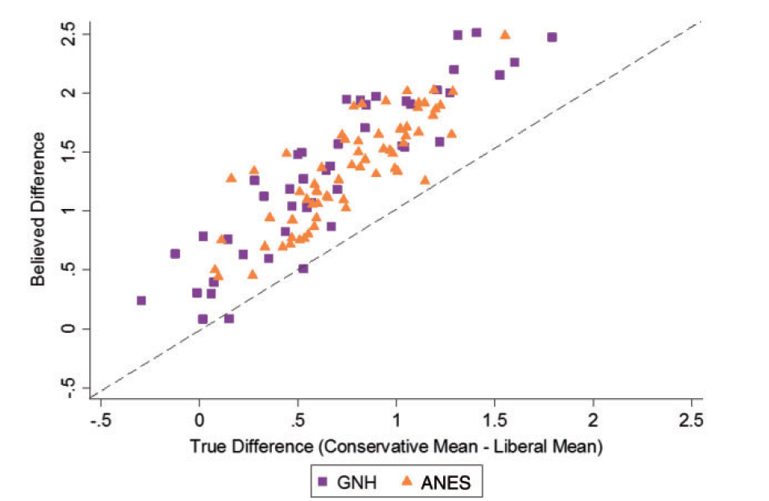
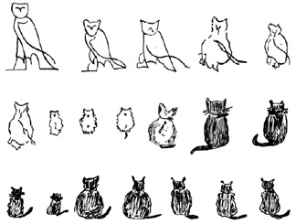
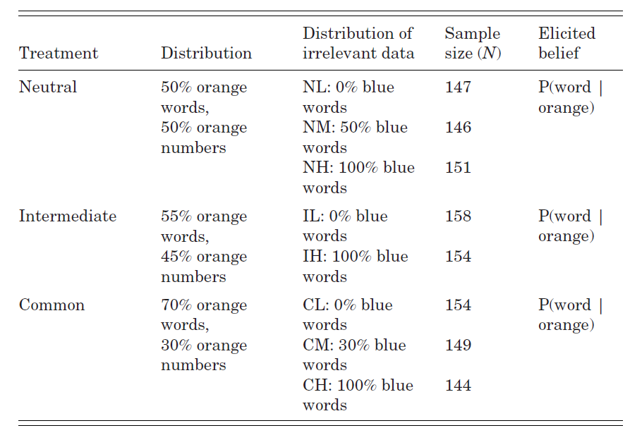
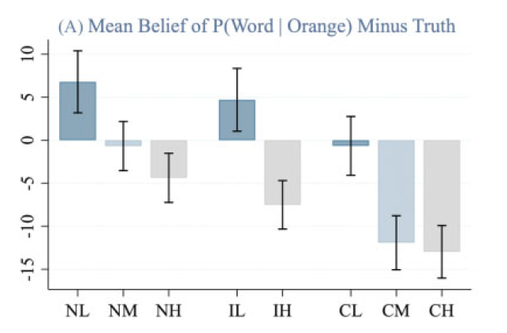
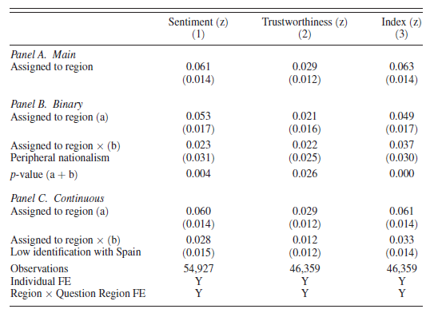
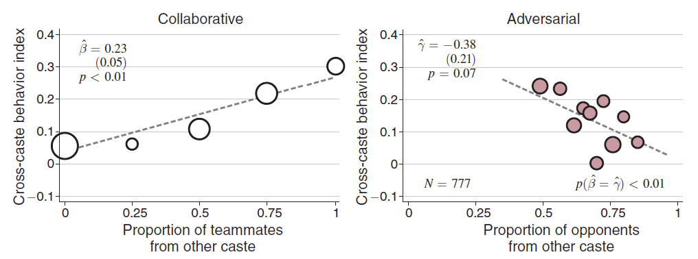
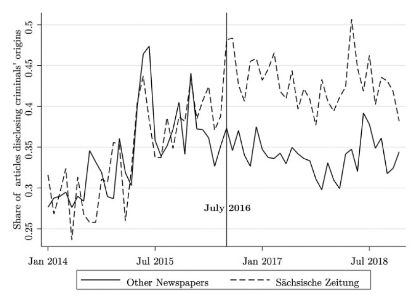
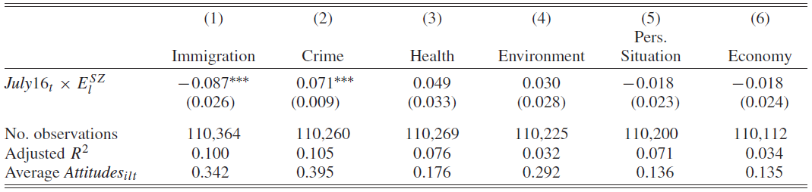

Representativeness & Memory
Belief distortions in the long run
Why talk about stereotypes?
- Less information sometimes improves decisions
– E.g., the introduction of blind orchestral auditions increased female hires (Goldin & Rouse 2000).
- This implies pre-existing stereotypes can distort decisions.
- How do such stereotypes form and persist?
This lecture: robust empirical patterns and a new memory-based model.
Moral-value differences, real vs. perceived
Bordalo et al. (2016) present evidence liberal vs. conservative positions.
Actual gaps exist…
Moral-value differences, real vs. perceived

…but believed gaps are much larger.
Belief dots lie above 45° line → exaggeration of the partisan gap.
The representativeness heuristic
Linda is 31, single, outspoken, very bright. Philosophy major, active in social-justice & anti-nuclear demos.
Which is more probable?
1. Linda is a bank-teller
2. Linda is a bank-teller and a feminist
Tversky and Kahneman (PR, 1982) report that 85 % pick (2). This violates sum rule:
- The event “bank-teller + feminist” is a subset of the event “bank-teller”. By the sum rule, \(P(\text{bank-teller + feminist})\le P(\text{bank-teller}).\)
- The Linda example is interesting because it intuitively cues associations in our brain.
- “Linda cares about social justice and is against nuclear power, so she must be a feminist.”
- The same kind of thinking seems to occur in other contexts.
- For example, people may reason: “He supports right-wing populism so he must be a misogynist, bigot, and have a worryingly high consumption of energy drinks.”
- How do these associations occur? To understand this, we need to learn a bit about human memory…
Why talk about memory?
Good evidence that memory influences decisions.
Goldfayn-Frank and Wohlfahrt (JME, 2020): Inflation expectations in Germany were strongly shaped by the unification experience. This changes how people consume and invest.
Imperfect memory
- Suppose we aim to have a psychologically realistic model of how people remember. The first thing that we might want to assume is that people forget things.
- This is the sieve model of memory. Individuals learn and store information, but over time, some details slip through and are lost.
Memory as a sieve?
- The sieve model explains some memory features but misses out big parts. We do not only forget randomly, but also suppress, reconstruct, and modify.
- This research started with Bartlett (1930), who documents systematic distortions over time.
 - In one experiment, participants reconstruct a painting of an owl, transforming it into a cat.
- A better analogy may be memory as Google search:
- Google is imperfect, you do not always find what you search for.
- But what you find can change day-by-day, just as you might sometimes remember what you thought you had forgotten.
- Google makes does not always provide you with exactly what you are looking for.
- E.g., googling “weather in munich” might return ad results on summer clothes.
- Just as when thinking about summer, I make associations to ice cream.
Associative memory and stereotypes?
- Question: What is the % of red hair among the Irish?
- The basic argument for why associative memory makes us overestimate this %:
- When I think about (red hair, Irish), a lot of reasons come to mind providing good evidence that many Irish persons are red haired.
- When I think about (other hair, Irish), it is easy for my memory to make associations with other-haired people that are not Irish.
Associative memory and stereotypes?
- When I think about (red hair, Irish), a lot of reasons come to mind providing good evidence that many Irish persons are red haired.
- When I think about (other hair, Irish), it is easy for my memory to make associations with other-haired people that are not Irish.
- Many non-Irish other-haired people exist.
- Not as many non-Irish red-haired people exist.
- Therefore, memory interference is larger when I think about (other hair, Irish) than about (red hair, Irish) \(\rightarrow\) This makes me overestimate the %.
- This discussion follows Bordalo, Conlon, Gennaioli, Kwon, Shleifer (QJE, 2022).
- Consider an agent with a memory database \(E\) which contains entries with attribute vector \(a=(a_1,a_2).\)
- For example: \(a_1 =\) hair color (red/other), \(a_2 =\) nationality (Irish/non-Irish).
- The agent’s task is to estimate a conditional share \(P(a_1|a_2).\)
- For example \(P(a_1 = \text{red hair}| a_2 = \text{Irish}).\)
The memory database
- Think of the memory database as capturing the joint distribution of \((a_1,a_2).\) For example, if the database is broadly accurate, then:
| Irish |
0.1% |
0.9% |
| Non-Irish |
1.5% |
97.5% |
- Searching for \((\text{Red Hair, Irish})\) returns \(E(\text{Red Hair, Irish}) = 0.1\%.\)
- An unbiased of \(P(\text{Red Hair | Irish})\) is \(\frac{0.1}{0.1 + 0.9} = 10\%.\)
Assumptions on Memory
Assumption (Sampling and counting). To form belief \(P(a_1 = x|a_2 = y)\), an agent sends two requests to their memory database, \(q_1,\) asking for \(T\) samples as evidence of \((a_1 = x\text{ and }a_2 = y)\) and \(q_2,\) asking for \(T>0\) samples as evidence of \((a_1 \neq x\text{ and }a_2 = y).\) The agent then keeps all the results that cohere with each request. Denote the observed coherent results by \(R_{q_1}\) and \(R_{q_2}\), respectively. In a second step, the agent combines these requests to obtain the estimate: \[
\hat{P}(a_1 = x|a_2 = y) = \frac{R_{q_1}}{R_{q_1} + R_{q_2}}.
\]
Sampling & Counting Example
- Recall the memory database, which captures the joint distribution:
| Irish |
0.1% |
0.9% |
| Non-Irish |
1.5% |
97.5% |
- Suppose the agent samples with \(T = 10,000.\)
- The agent first draws 10,000 samples from their database and keeps all results with (Red Hair, Irish) …
- The agent then draws 10,000 samples from their database and keeps all results with (Other Hair, Irish) …
- If this sampling is unbiased, then \(R_{q_1} \approx 0.1\%\cdot T = 10\) and \(R_{q_2} \approx 0.9\% \cdot T = 90\).
- The estimate based on unbiased sampling is approx. equal to the truth: \(P(\text{red hair, Irish}) \approx \frac{10}{10 + 90} = 10\%\)
- If this sampling is unbiased, then \(\small R_{q_1} \approx 0.1\%\cdot T = 10\) and \(\small R_{q_2} \approx 0.9\% \cdot T = 90.\)
- The estimate based on unbiased sampling is approx. equal to the truth: \(\small P(\text{red hair, Irish}) \approx \frac{10}{10 + 90} = 10\%.\)
- This sampling approach to belief formation is very common in cognitive psychology.
- It approximates the recall process. People sort through examples in their memory.
- You can also think of this as simulation. Rather than sorting through past memories of meeting Irish people, people may simulate examples of how Irish people look like.
Step 2 – Cued recall
Similarity weight \(S(a,q)\in[0,1]\)
highest when \(a=q\), lowest when nothing matches.
Cued recall probability
[ r_q(a)=. ]
Search term “red-haired + Irish” mostly returns red-haired Irish,
but also (fewer) red-haired non-Irish, etc.
Expected reported belief
Combining sampling + cued recall (with \(T\) large):
[ E[P(xy)] = =, ]
[ = {_{a} E(a)}. ]
- If unrelated items are more similar to \(q_2\) than \(q_1\) → \(\alpha>1\) → under-inference.
- If they are less similar → \(\alpha<1\) → over-inference.
Irish hair-colour example
| Irish |
10 % |
90 % |
| Non-Irish |
1.5 % |
98.5 % |
Query \((\text{red},\text{Irish})\): few unrelated memories ⇒ \(\alpha<1\) ⇒ over-estimate share of red-haired Irish.
Query \((\text{other},\text{Irish})\): many unrelated memories ⇒ \(\alpha>1\) ⇒ under-estimate.
Laboratory evidence for cued recall
Design – Bordalo et al. (2022)
40 slides → filler task → ask
\(P(\text{word}\mid\text{orange})\;?\)
- Neutral: true share = 50 %.
- Increasing blue words raises interference.
- Increasing orange words raises true share.
Results

- More blue-word clutter ↓ estimated orange-word share.
- Raising true share raises estimate less than 1-for-1.
✔️ Matches model predictions.
Field evidence I – Inflation memories
Random military postings (Spain)
Bagues & Esteve-Volart (2023): serving outside home region ↑ trust & Spanish identity.
Lowe (2021) – Indian cricket leagues
• Mixed-caste teams (co-op) ↓ bias
• Same-caste teams (purely competitive) ↑ bias
::: column width=“55%” 
::: column width=“45%”  ::: :::
Keita (2023): German newspaper started always stating offenders’ nationality.
→ Readers downgraded immigration worries, upgraded crime worries.
(Counter-stereotypical info enters memory.)
Take-aways
- People over-react to weak cues, under-react to strong cues
– reconciles “conservatism” (lab) with “excess movement” (field).
- A cued-recall model formalises associative memory: similar but irrelevant evidence distorts sampling.
- Lifetime experiences & media cues shape beliefs for decades.
- Contact quality matters – cooperative exposure can loosen stereotypes, adversarial can harden them.
- Policy: design information & encounters to steer the cue set (blind auditions, balanced crime reporting, cooperative programmes).